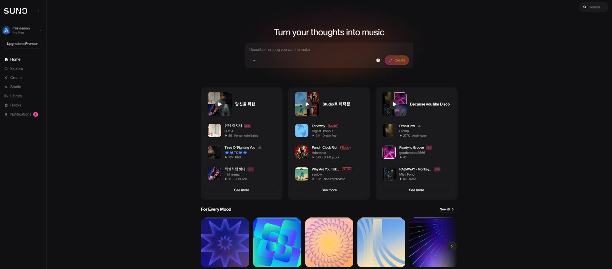
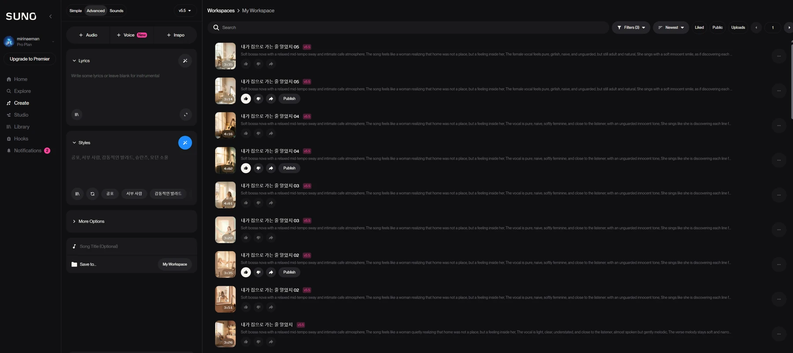
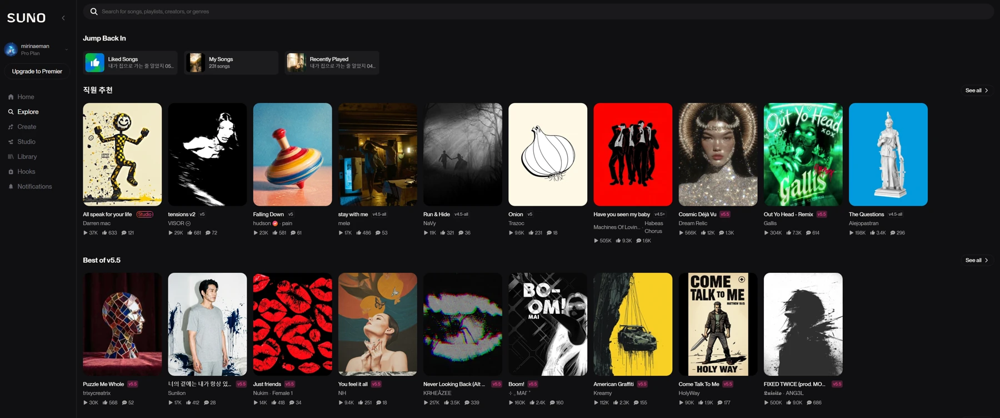
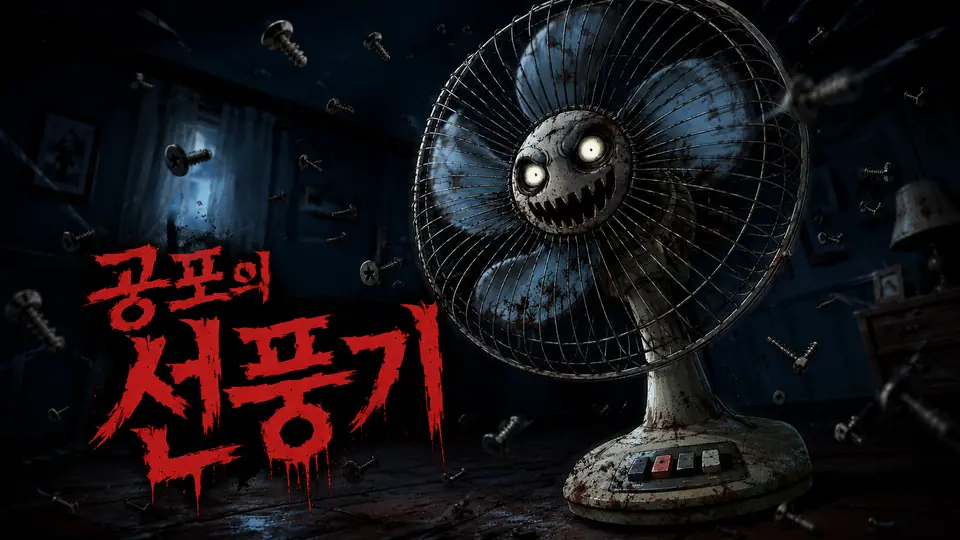

듣는 음악
시장 · 방송 · 차트 · 유통
SIDE A / A PERSONAL MEDIUM
Public 음악에서
Private 음악으로
동서울대학교 전기공학과 김준호 교수

SIDE A / LINER NOTES
개인이 자신의 이야기와 메시지를 음악이라는 미디어로 소유하게 된 사건이다.
02 / 17SIDE A / PUBLIC → PRIVATE
시장 · 방송 · 차트 · 유통
기억 · 관계 · 나의 메시지
SIDE A / A CHANGE OF CENTER
시장, 방송, 차트, 유통 중심
개인의 기억, 관계, 메시지 중심
작곡 기술보다 의도 설계가 중요
LYRICS / GENRE / VOCAL / PURPOSE
SIDE B / FOUR DECISIONS
Verse, Chorus, Bridge
소리의 문법과 기대감
성별, 톤, 감정, 발음
일반곡, 로고송, 캠페인송, CM송
SIDE B / THE PRODUCTION BRIEF
Suno는 텍스트 프롬프트로 보컬, 가사, 편곡이 포함된 완성형 곡을 생성하는 AI 음악 도구다.

SIDE B / CREATE → LISTEN → REFINE

처음부터 정답을 뽑는 것이 아니라, 반복할 수 있는 기준을 만드는 것이 핵심이다.
SIDE B / SONG ARRANGEMENT
상황과 이야기를 연다
감정을 끌어올린다
핵심 메시지를 반복한다
전환과 재해석을 만든다
구간마다 맡은 역할이 다릅니다. 후렴에는 가장 남기고 싶은 말을 둡니다.
09 / 17SIDE B / THE SESSION SHEET
모든 조건은 내가 전하려는 메시지를 향합니다.
이야기: 누구의 어떤 상황인가
메시지: 후렴에서 무엇을 남길 것인가
장르: 어떤 음악 문법을 빌릴 것인가
보컬: 누가 어떤 감정으로 부르는가
구조: Intro–Verse–Chorus–Bridge–Outro
SIDE B / PURPOSE SHAPES FORM
감정과 서사의 완성도
브랜드명과 짧은 기억
행동을 유도하는 메시지
짧은 시간 안의 후킹
SIDE B / THREE WAYS TO SPEAK
공간, 장면, 리듬
가사, 발음, 화자
브랜드 사운드와 훅
연주곡은 분위기를 운반하고, 보컬곡은 문장을 운반한다.
12 / 17SIDE C / FROM IDEA TO RELEASE
메시지 한 문장 정의
가사 구조와 장르 선택
프롬프트 입력 후 1차 생성
가사·보컬·스타일 수정
앨범/랜딩페이지로 발표

SIDE C / THE RELEASE SHELF
01싱글 앨범 랜딩페이지
작품 열기 ↗ 02
02메시지형 싱글
작품 열기 ↗
03이야기형 싱글
작품 열기 ↗장르 실험형 싱글
작품 열기 ↗실제 발표한 작품을 열어, 노래와 메시지가 만나는 방식을 살펴봅니다.
14 / 17SIDE C / SOUND DESIGN LAB
SIDE C / YOUR TURN
“내가 너에게 전하고 싶은 말은…”
한 문장으로 적고, 후렴으로 바꿔보세요.
SIDE C / THE SONG IS YOURS
Suno를 배우는 것은 AI 버튼을 배우는 일이 아니라,
나의 이야기를 노래로 번역하는 법을 배우는 일이다.